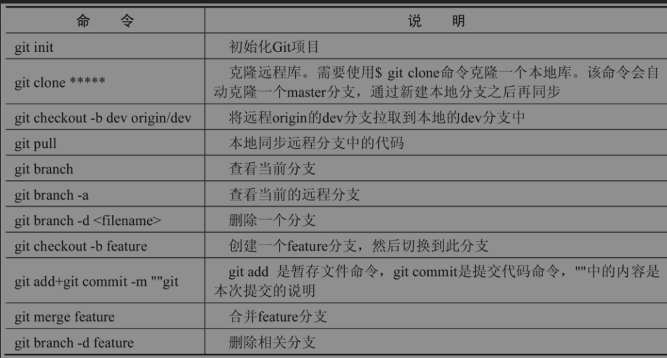

Contents
3. 项目开发准备¶
3.1. 1. SQL数据库和NoSQL数据库¶
3.1.1. 1.1.1 SQL数据库和NoSQL¶
数据库称为关系型数据库，存储的格式可以直观地反映实体间的关系。关系型数据库和常见的表格比较相似，它的表与表之间有很多复杂的关联。
常见的关系型数据库有MySQL、SQLServer和PostgreSQL等。
3.1.2. 1.1.2 NoSQL数据库¶
NoSQL数据库（非关系型数据库）是出于简化数据库的结构、避免冗余、摒弃复杂的分布式目的而设计的。
MongoDB、Redis和Memcache都是NoSQL类型的数据库。
NoSQL数据库本身并不一定遵循ACID原则，其通过对一些特性的协调，极大地提高了海量数据的读取和存储性能，非常适合大数据和可扩展性业务多变的应用场景。
NoSQL数据库使用Key-Value形式操作非结构化数据的效率很高，但操作结构化数据的效率很低。
3.1.3. 1.1.3 mongodb¶
在Linux中安装MongoDB¶
yum install mongodb-org
如果服务器中的源版本非常老，可以使用vim编辑器编写下载地址，增加新的安装源，具体命令如下：
cat /etc/yum.repos.d/mongodb-org-4.0.repo <<-'EOF'
[mongodb-org-4.0]
name=MongoDB Repository
basurl=https://repo.mongodb.org/yum/redhat/$releasever/mongodb-org/4.0/x86_64/
gpgcheck=1
enabled=1
gpgkey=https://www.mongodb.org/static/pgp/server-4.0.asc
保存完成之后，使用如下命令安装新版本的MongoDB：
yum install mongodb-org
3.1.4. 1.1.4 redis¶
Redis提供了更加易用的键-值对（Key-Value）存储模式，完全不同于SQL数据库中的数据结构。但这也存在一个很大的缺点，即对于习惯使用SQL的用户来说，Redis的学习成本远远大于MongoDB。
Redis采用常驻内存的方式，以内存作为存储数据的位置。也就是说，数据的读写不会有存储设备的I/O过程，这就是其处理速度极快的原因。
Redis采用读取和写入内存的方式虽然使数据读取速度大幅度上升，但却面临一个致命的问题：如果断电，整个内存中的数据会放电清空，内存颗粒并不保存断电前的状态，这就会导致数据完全丢失。好在Redis提供了持久化的操作。
Redis支持RDB、AOF和diskstore这3种持久化机制，持久化功能有效地避免了因机房断电或应用进程内存清理造成的数据丢失问题。
RDB持久化：将当前数据库生成的数据快照备份到硬盘中，触发机制可以选择手动或自动方式。备份会生成一个压缩数据的二进制文件，代表当前Redis运行的内存状态。但是备份并不能做到实时地将数据进行持久化，而且在备份命令运行的过程中也会影响数据库的性能。
AOF持久化：采用数据日志的方式对每次数据的改变进行备份，恢复日志信息后，就可以将Redis数据库恢复至最新的内容。这是现阶段最流行的持久化方式。
diskstore持久化：该方式仅支持最新版本的Redis，单一的键值对应的value采用文件方式保存，在内存中没有相应数据的情况下从硬盘中找到数据，并读取到内存中。
在Linux中安装Redis¶
（1）使用wget命令下载安装包，命令如下：
wget http://download.redis.io/releases/redis-5.0.7.tar.gz
在http://download.redis.io/releases/中有很多不同版本的Redis安装包，可自行选择合适的版本
（2）使用如下命令解压压缩包。
tar zxvf redis-5.0.7.tar.gz
cd redis-5.0.7/src
make test
yum install tcl
make install
#安装完成后，在src文件夹下输入如下命令启动Redis
./redis-server
3.2. 2. 版本控制简介¶
我们以常见的大型网络游戏为例来说明一下版本号。
游戏在开发基本完成后会进行内测，该版本为“内测版本”，一般为int.int.int（0.1.0）这样的版本号；内测发现问题后会进行二次改进，改进后的“封测版本”会在“内测版本”的版本号基础上升级，例如0.3.0；最终没有问题的话则进行“公测”，发布正式的“公测版本”，版本号为1.0.0。
1.0.0正式版确定下来后，其他的如0.1.0、0.3.0版本去哪儿了呢？其实，各个版本的游戏都应当存放在游戏开发库中，使用版本控制工具进行版本管理。版本号的设定一般使用3个数字：·第1个数字一般认为是重大的正式版本或重大重构；·第2个数字一般是重大的功能改进和更新；·第3个数字一般是小升级或Bug问题的修复。
例如，软件产品刚发布时的正式版本号一般为1.0.0，如果之后进行了一次小的Bug修复，则版本号定义为1.0.1。
注意：版本号可能会出现0.×.×的形式，一般认为该软件并没有一个正式的版本，也就是说该软件尚处于开发或测试阶段。
3.2.1. 2.1 Git和GitHub¶
GitHub的网站地址为https://github.com/
在本地项目中使用如下命令拉取仓库，项目文件中任何代码的编写都将自动进行差别匹配，最终可以选择忽略或提交到代码仓库中。
git clone https://GitHub远程仓库地址
使用Git
3.3. 3. 测试工具¶
3.3.1. 3.1 浏览器自带的开发者工具¶
开发者工具中有多个不同的选项，不同的浏览器选项有所不同，但都有一些通用的选项。
Elements选项：查看当前页面的元素，最左侧的元素（DOM）按钮可以选择网页中的节点，然后在右侧的样式面板中可以修改该节点的一些属性、样式和代码，这些修改均会及时显示在页面中。
Console选项：用来调试JavaScript，JavaScript输出的所有内容（包括console.log()的输出）和报错信息都在该窗口中显示。不仅如此，在该选项卡的最下方可以执行任意的JavaScript代码。
Network选项：执行当前页面的监听任务，所有的请求将会出现在该选项的界面中，包括静态文件的请求、动态接口、AJAX等异步请求（包含每次的请求头部、请求体及最终的返回内容）。如果进行翻页、刷新、重定向（30X系列重定向等）处理，会主动刷新页面。
Sources选项：查看网页的源代码，可以调试和更改JavaScript、CSS及图片等文件，支持断点操作和静态资源预览。不仅如此，在该选项的界面中可以查看JavaScript代码执行过程中中间变量的值。
Application选项：查看网页中的缓存和Cookie。在左侧的节点选择面板中可以打开相应的内容，选择节点后在右侧可以进行该节点的删除或修改操作,这个操作可以更改Cookie或HTML 5中的缓存值。
3.3.2. 3.2 Postman插件¶
Postman本身是Chrome中的一个API测试插件，但由于Chrome取消了相应的插件应用，所以官方将其封装为小软件供开发者下载，官网地址为https://www.postman.com/。单击下方的Download the App按钮即可下载。
Postman可以请求任意Web类型的API，支持HTTP、HTTPS等URL进行GET、POST和PUT等方式的请求。可以在配置请求时填写需要测试的数据，或者是模拟请求的头部信息。
3.4. 4.小结¶
我们学习了SQL和NoSQL的区别；其次介绍了MongoDB和Redis数据库在Linux和Windows平台的安装方法；
最后介绍了几款实际项目开发中要用到的工具，包括版本控制工具、浏览器自带的开发者工具和Postman，这些工具